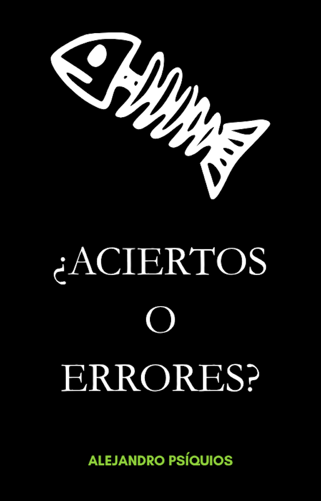

Relatos y cuentos
El pescador trágico

El pescador trágico contiene nueve relatos y cuentos sobre decisiones que parecían correctas, momentos de lucidez mal interpretados y convicciones que se convierten en condena.
Son historias construidas alrededor de una idea sencilla: algunas equivocaciones no parecen equivocaciones mientras las estamos cometiendo.
El personaje no siempre sabe que se dirige hacia el error. A veces ocurre precisamente lo contrario: cree haber encontrado la respuesta.
El error que parecía un acierto
Equivocarse no siempre significa actuar sin pensar.
Hay decisiones que nacen de una convicción, de una interpretación aparentemente razonable o incluso de un momento de lucidez.
El problema aparece después, cuando aquello que parecía una solución empieza a revelar sus consecuencias.
El error no es tropezar.
Es avanzar convencido.
Nueve relatos sobre decisiones
Los nueve relatos exploran distintas formas de equivocarse: confiar en una certeza, interpretar mal una señal, perseguir aquello que parecía correcto o continuar por un camino del que todavía no se percibe el final.
Cada historia plantea su propio conflicto y sus propias consecuencias. No forman una única narración ni necesitan leerse como una secuencia.
Lo que las une es la misma pregunta: ¿qué ocurre cuando nuestra certeza es precisamente aquello que nos conduce al error?
Para quién es este libro
El pescador trágico puede interesar especialmente a lectores que buscan relatos breves con una idea central, historias sobre decisiones y consecuencias o ficción que deja una pregunta después de terminar la lectura.
No pretende ofrecer una moraleja para cada historia. Las decisiones pertenecen a sus personajes y las consecuencias forman parte del propio relato.
Son cuentos para leer por la historia y, quizá después, volver sobre aquello que parecía tan evidente al principio.
El error no es tropezar.
Es avanzar convencido.